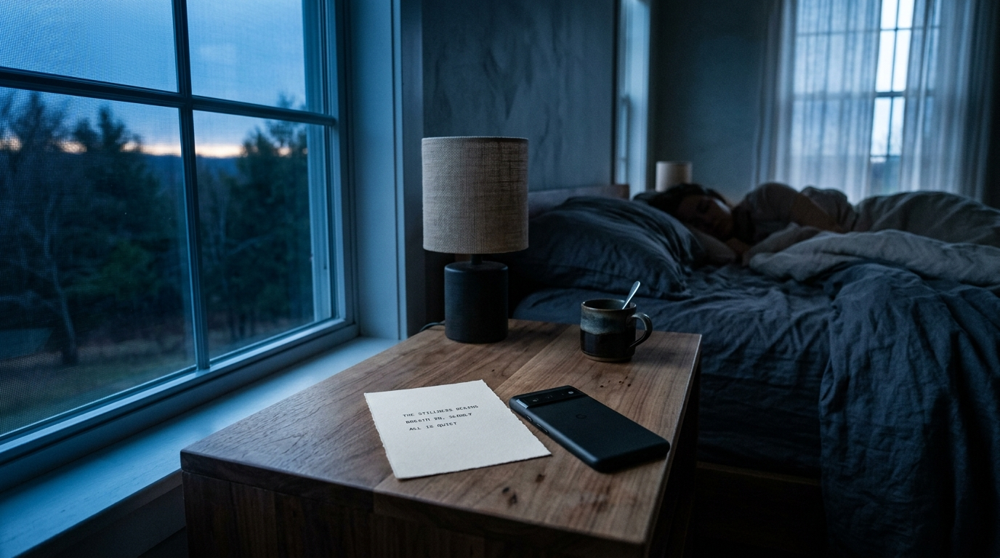

Études Photographiques
L'Art du Maintien
Le silence à l'œuvre dans nos ateliers.

05h30 — Billet de l'Aube
La synthèse déposée sur la table de chevet
L'Atelier au Repos
Traitement discret sous écran éteint
Depuis plus d'un siècle et demi, la malle protège les biens les plus précieux à travers les océans. Corvus transpose cette exigence immuable à vos systèmes numériques : sauvegardes fermées au triple loquet, rotation soignée des registres et silence absolu durant chaque traversée nocturne.
Quatre compartiments capitonnés conçus pour abriter vos données contre les tempêtes numériques.
Chaque nuit à 03h00, Corvus crée un instantané différentiel scellé avec un hachage SHA-256 déterministe. Les fichiers sont protégés dans un format universel sans jamais dépendre d'un stockage cloud extérieur.
Les journaux d'activité et caches de compilation accumulés durant le jour sont minutieusement triés, compressés par blocs de 14 jours et purgés pour restituer l'espace vital à votre volume principal.
Toutes les clés maîtresses résident au cœur de l'enclave sécurisée de votre processeur. Corvus ne transmet jamais aucun certificat ni empreinte sur le réseau Internet.
À l'aube, un document de trois lignes est déposé avec courtoisie sur votre bureau. Vous découvrez exactement ce qui s'est déroulé pendant votre sommeil sans avoir à déchiffrer des milliers de lignes de console.
L'enchaînement exact des quarts de nuit, de la tombée du jour au lever de soleil.
Vérification de l'extinction des écrans et veille du cycle d'inactivité utilisateur.
Rotation des journaux volumineux, sauvegarde chiffrée et défragmentation ordonnée.
Validation des empreintes SHA-256 et passage en état de repos à consommation nulle.
Condensation en trois lignes dactylographiées prêtes sur le bureau à votre réveil.
Le silence à l'œuvre dans nos ateliers.

Chaque licence est perpétuelle et sans rente mensuelle.